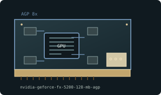

[ AGP-ERA GRAPHICS CARDS // IDENTIFIED COMPONENT ]
NVIDIA GeForce FX 5200 128 MB AGP
NV34 / CineFX 2.0, 2003. This entry identifies one model or reference configuration; related products and OEM variants are distinguished below.

MODEL / VARIANT: FX 5200 cards exist with 64/128-bit memory, multiple capacities, low-profile layouts, and PCI variants. Verify exact PCB width/bus; the family name alone does not identify performance.
Recorded specifications
| Cataloged product | NVIDIA GeForce FX 5200 128 MB AGP |
|---|---|
| Generation / core | NV34 / CineFX 2.0, 2003 |
| Core & memory | NV34; 128 MB DDR on common 128-bit board configuration; 250 MHz core and 200 MHz memory clock (400 MT/s effective) reference-class values. |
| Host interface & I/O | AGP 8x/4x; VGA and TV-out common, DVI on selected partner cards; power connector and bracket vary. |
| Variant boundary | FX 5200 cards exist with 64/128-bit memory, multiple capacities, low-profile layouts, and PCI variants. Verify exact PCB width/bus; the family name alone does not identify performance. |
| Archival identification | Record full part number, PCB or module revision, BIOS/firmware, device/subsystem IDs, driver version, adapters, physical condition and source-document edition. |
Compatibility, service & archival notes
The named 128 MB AGP configuration should be verified on the specimen; avoid applying it to FX 5200 Ultra or low-profile OEM boards.
Inspect card label and memory placement to identify 64- versus 128-bit version. Save VBIOS and last OS-compatible driver; check AGP voltage and any auxiliary power socket.
- Check signaling, slot keying, lane width, power pinout, board/module dimensions, case clearance, airflow and PSU requirements for the exact specimen.
- Use drivers supporting its device ID and target OS. Preserve original installer and firmware copies, and record their versions before changes.
- Do not energize boards with corrosion, cracks, damaged connectors, obstructed cooling or suspected shorts; document condition before bench testing.
Manufacturer, model & standards sources
- GeForce FX series model listingModel/product-history reference; compare the exact card revision and nameplate.
- NVIDIA product/legacy driver documentationManufacturer or archived product/driver documentation; exact OEM board details may differ.
- AGP interface standardHost interface reference; confirm exact physical and electrical compatibility.
Reference specifications do not supersede the board vendor's manual or nameplate. Performance figures are vendor claims unless explicitly identified as measured.